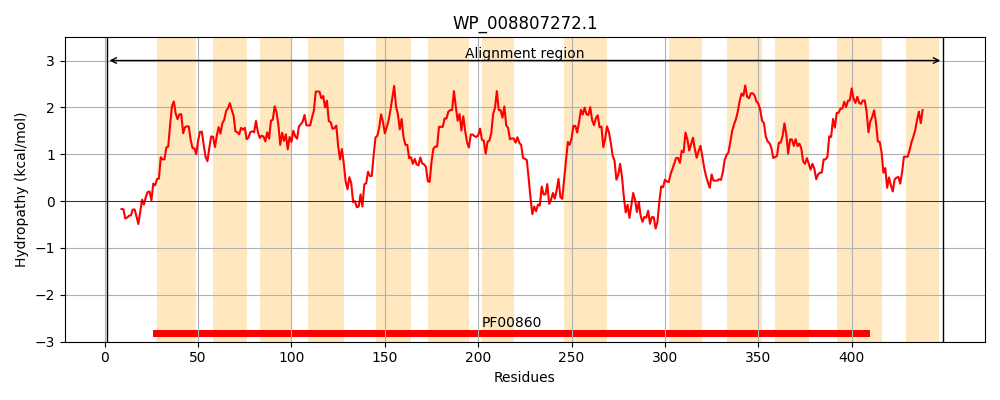
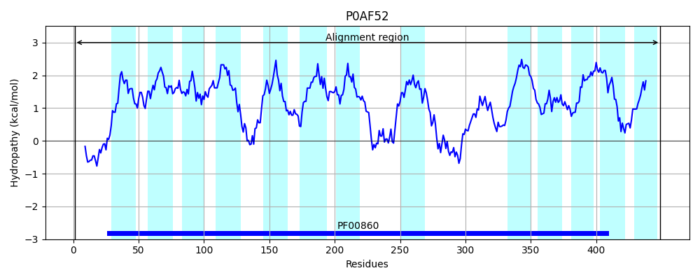
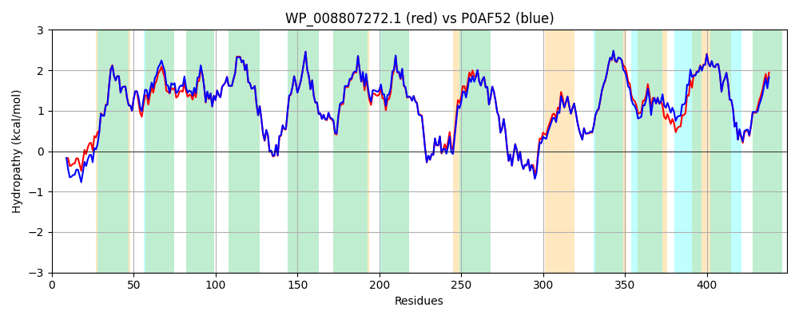

Hit Accession: P0AF52
Hit TCID: 2.A.40.7.5
Hit Description: gnl|BL_ORD_ID|8807 gnl|TC-DB|P0AF52|2.A.40.7.5 Putative permease yjcD OS=Escherichia coli (strain K12) GN=yjcD PE=1 SV=1
Mach Len: 449
e:0.000000
Query TMS Count : 13
Hit TMS Count: 13
TMS-Overlap Score: 11.550000
Predicted Substrates:CHEBI:8639;7H-purine, CHEBI:78235;N(6)-hydroxyadenine, CHEBI:5563;guanine, CHEBI:5563;guanine, CHEBI:21803;1-methylguanine, CHEBI:20702;2-aminopurines, CHEBI:9555;tioguanine, CHEBI:5841;hypoxanthine, CHEBI:5841;hypoxanthine, CHEBI:10059;9H-xanthine, CHEBI:50667;mercaptopurine
BLAST Alignment:
Score: 2124 , Bit scores: 822 bits, E-value: 0.0e+00, Alignment length: 449, Percentage identity: 94
Query: 1 MSTPSARTGGSLDAWFKISARGSTVRQEIVAGLTTFLAMVYSVIVVPGMLGKAGFPPAAVFVSTCLVAGVGSLVMGLWANLPMAIGCAISLTAFTAFSLVLGQQISIPVALGAVFLMGVLFTVISATGIRSWILRNLPQGVAHGTGIGIGLFLLLIAANGVGLVIKNPLDGLPVALGKFASFPVVMSLIGLAVIIGLEKMKVPGGILLTIIGVSIVGLIFDPNVHFSGIFAMPSLSDDKGNSLIGSLDIIGALNPVVLPSVLALVMTAVFDATGTIRAVAGQANLLDKDGQIINGGKALTTDSLSSVFSGLVGAAPAAVYIESAAGTAAGGKTGLTAVTVGVLFLLILFLSPLSYLVPAYATAPALMYVGLLMLSNVAKIDFNDFVDAMAGLITAVFIVLTCNIVTGIMIGFATLVIGRLVSGEWRKLNLGTVIIAVALVAFYAGGWAI 449
MSTPSARTGGSLDAWFKIS RGSTVRQE+VAGLTTFLAMVYSVIVVPGMLGKAGFPPAAVFV+TCLVAG+GS+VMGLWANLP+AIGCAISLTAFTAFSLVLGQ IS+PVALGAVFLMGVLFTVISATGIRSWILRNLP GVAHGTGIGIGLFLLLIAANGVGLVIKNPLDGLPVALG FA+FPV+MSL+GLAVIIGLEK+KVPGGILLTIIG+SIVGLIFDPNVHFSG+FAMPSLSD+ GNSLIGSLDI+GALNPVVLPSVLALVMTAVFDATGTIRAVAGQANLLDKDGQII+GGKALTTDS+SSVFSGLVGAAPAAVYIESAAGTAAGGKTGLTA+TVGVLFLLILFLSPLSYLVP YATAPALMYVGLLMLSNVAKIDF DFVDAMAGL+TAVFIVLTCNIVTGIMIGFATLVIGRLVSGEWRKLN+GTV+IAVALV FYAGGWAI
Sbjct: 1 MSTPSARTGGSLDAWFKISQRGSTVRQEVVAGLTTFLAMVYSVIVVPGMLGKAGFPPAAVFVATCLVAGLGSIVMGLWANLPLAIGCAISLTAFTAFSLVLGQHISVPVALGAVFLMGVLFTVISATGIRSWILRNLPHGVAHGTGIGIGLFLLLIAANGVGLVIKNPLDGLPVALGDFATFPVIMSLVGLAVIIGLEKLKVPGGILLTIIGISIVGLIFDPNVHFSGVFAMPSLSDENGNSLIGSLDIMGALNPVVLPSVLALVMTAVFDATGTIRAVAGQANLLDKDGQIIDGGKALTTDSMSSVFSGLVGAAPAAVYIESAAGTAAGGKTGLTAITVGVLFLLILFLSPLSYLVPGYATAPALMYVGLLMLSNVAKIDFADFVDAMAGLVTAVFIVLTCNIVTGIMIGFATLVIGRLVSGEWRKLNIGTVVIAVALVTFYAGGWAI 449 | Protein Hydropathy Plots: |
|---|
|  |  |
Pairwise Alignment-Hydropathy Plot:
|
|---|
|  |